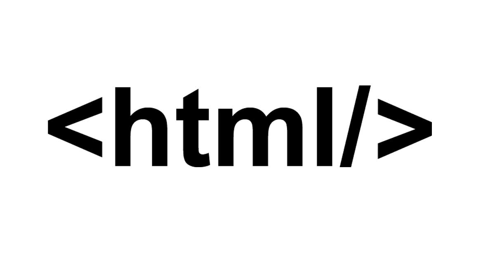

Por el momento hay un total de 142 elementos HTML estandarizados por la W3C, excluyendo los que están en las fases iniciales de estandarización y los que se quedaron obsoletos. Dicho esto, es posible que te pierdas o que te olvides de algunos de ellos que pueden ser realmente útiles, cuando los necesites.
Anteriormente hicimos un resumen de algunos de los mejores trucos de CSS que seguramente habías pasado por alto. Este artículo te recordará algunas de esas etiquetas HTML que no sabías que podías utilizar para implementar características tales como:
Mapas de imágenes
El tag map se pueden utilizar para crear mapas de imágenes. Los mapas de imagen sirven, básicamente, para crear áreas clicables dentro de una imagen. Esas áreas clicables pueden ser hipervínculos hacia otra página web o anclas hacia otras partes del mismo documento. Puedes definir qué áreas de una imagen quieres que sean clicables con sólo indicar las correspondientes coordenadas XY de los puntos de los tag area, anidados dentro de map.
Nota: No se le puede dar estilo a las zonas clicables a través de CSS. Si quieres que esos marcadores tengan estilo, utiliza un sencillo software de edición de imágenes para dibujar los marcadores.
Consejo: Si quieres saber las coordenadas de un punto en una imagen, abre la imagen en un programa de edición de imágenes y mover el cursor hacia ese punto. Deberías ser capaz de ver las coordenadas del punto en el propio software. Por lo menos, en GIMP se muestra en el lado izquierdo de la barra inferior.
.jpg)
PLANTILLAS
Junto con HTML5 vino el nuevo tag template. El tag template es un elemento que nos permitirá crear una especie de plantilla de código HTML que luego podremos utilizar tantas veces como queramos en nuestra página.
URL DE VIDEO DE SUSTENTACION
 Por ejemplo, supón que tienes un table donde las filas se añaden de forma dinámica. Puedes simplemente añadir una fila vacía en la tabla dentro de la template y cuando sea necesario llamar a una función de JavaScript que contenga una secuencia de comandos para copiar el contenido al interior de los tags de dicha plantilla. Esto no está soportado por IE.
Por ejemplo, supón que tienes un table donde las filas se añaden de forma dinámica. Puedes simplemente añadir una fila vacía en la tabla dentro de la template y cuando sea necesario llamar a una función de JavaScript que contenga una secuencia de comandos para copiar el contenido al interior de los tags de dicha plantilla. Esto no está soportado por IE.

BASE URL
El tag de HTML base es realmente útil cuando cuentas en tu web con múltiples enlaces y casi todos están redirigidos al mismo dominio. Este tag te permite añadir una Base URL al documento, y a su vez te otorga la capacidad de añadir sólo URLs relativas a otros enlaces de la página cuando sea necesario.
Nota: Todas las direcciones URL relativas de la página harán referencia a la Base URL. Si tienes cualquier vínculo con un dominio diferente, no te olvides de asignar la dirección URL completa al mismo.

Color Picker
HTML5 introdujo muchos elementos nuevos para inputs; el color picker es uno de ellos. Este elemento permite a los usuarios escoger un color mediante un control que simula un cuadro cromático. El color escogido se mostrará en hexadecimal en la caja de texto.